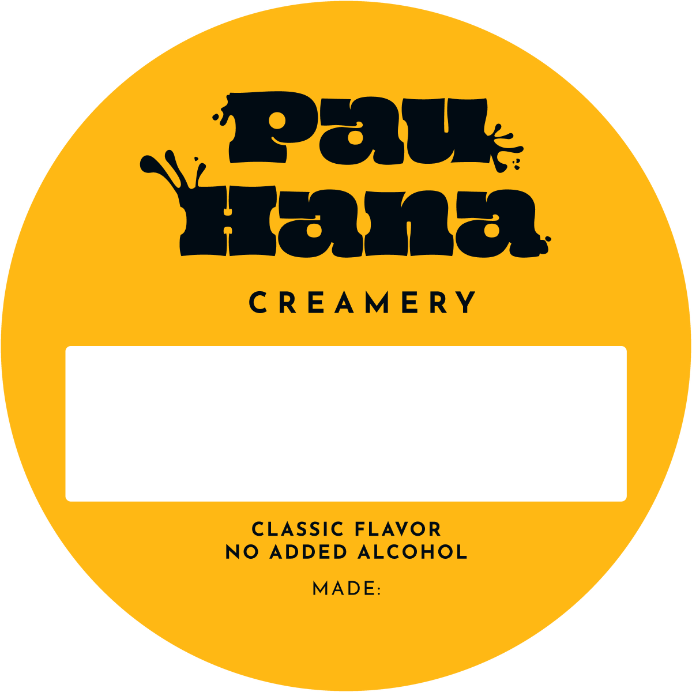
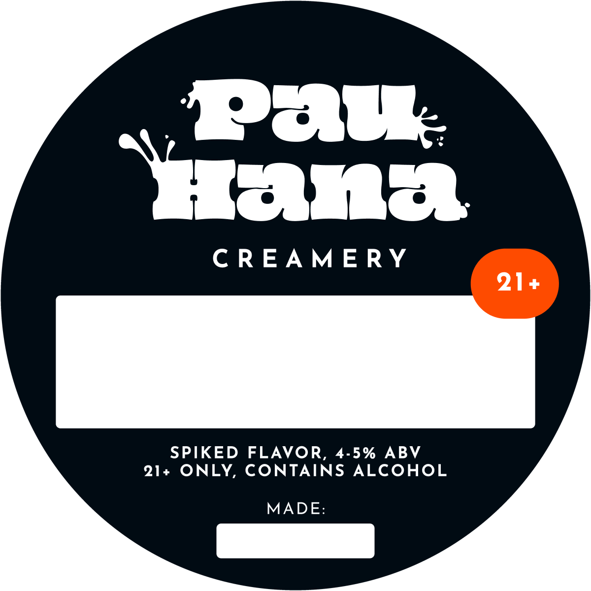
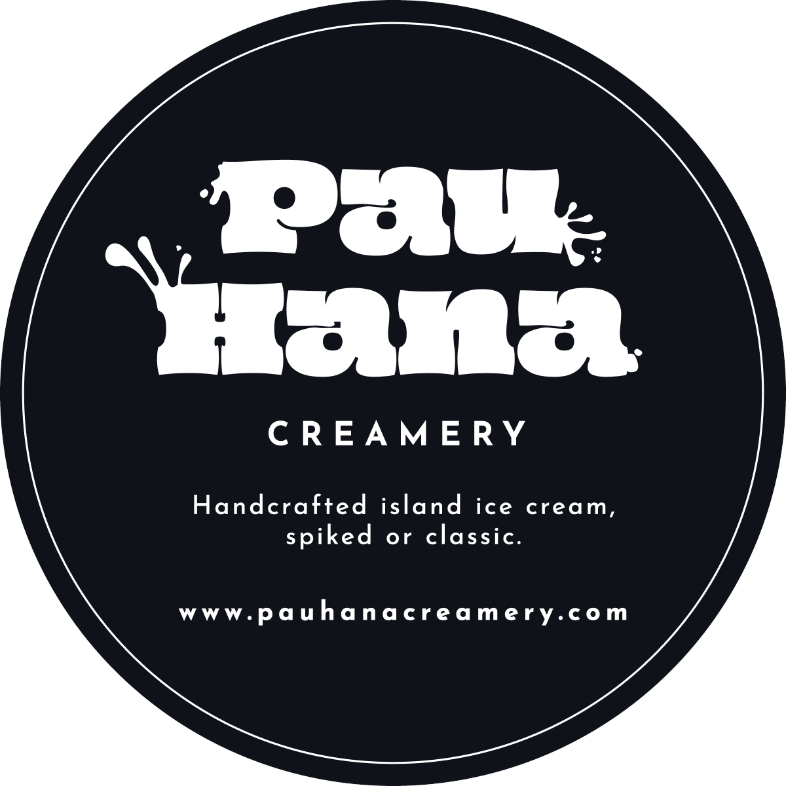
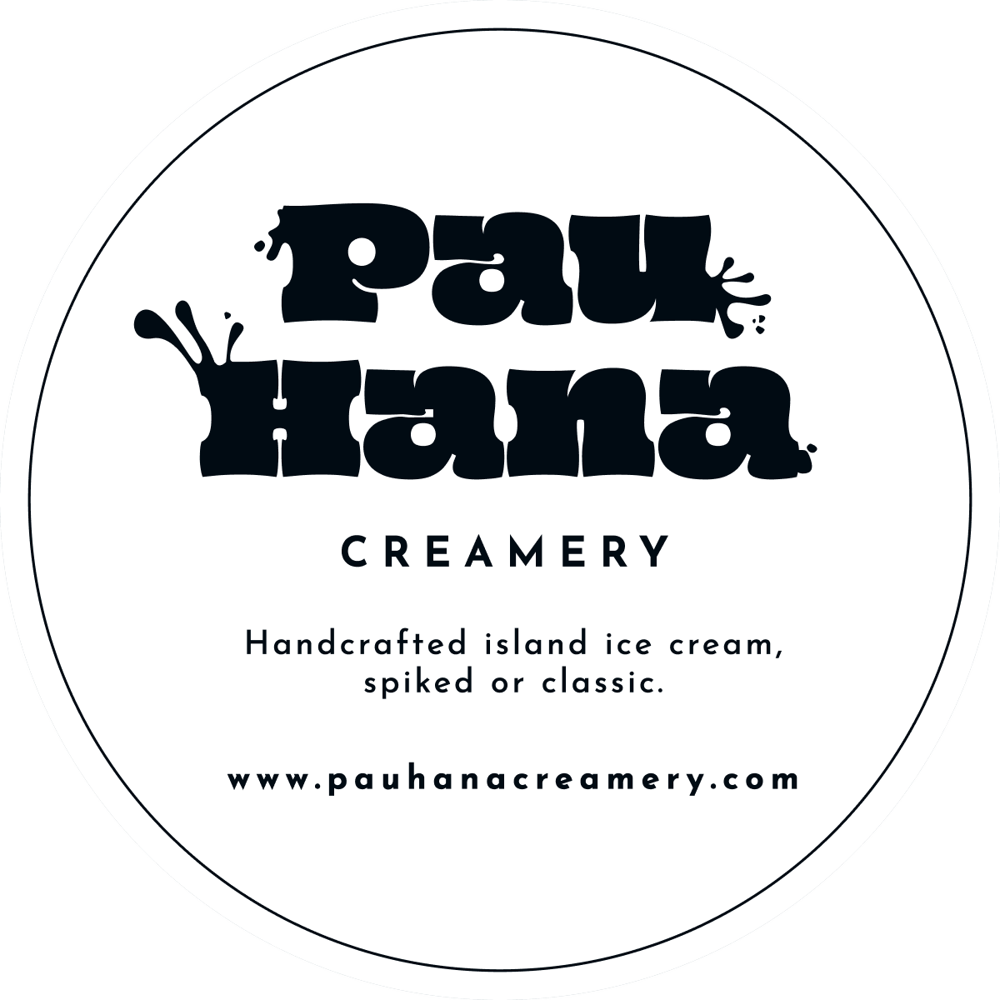
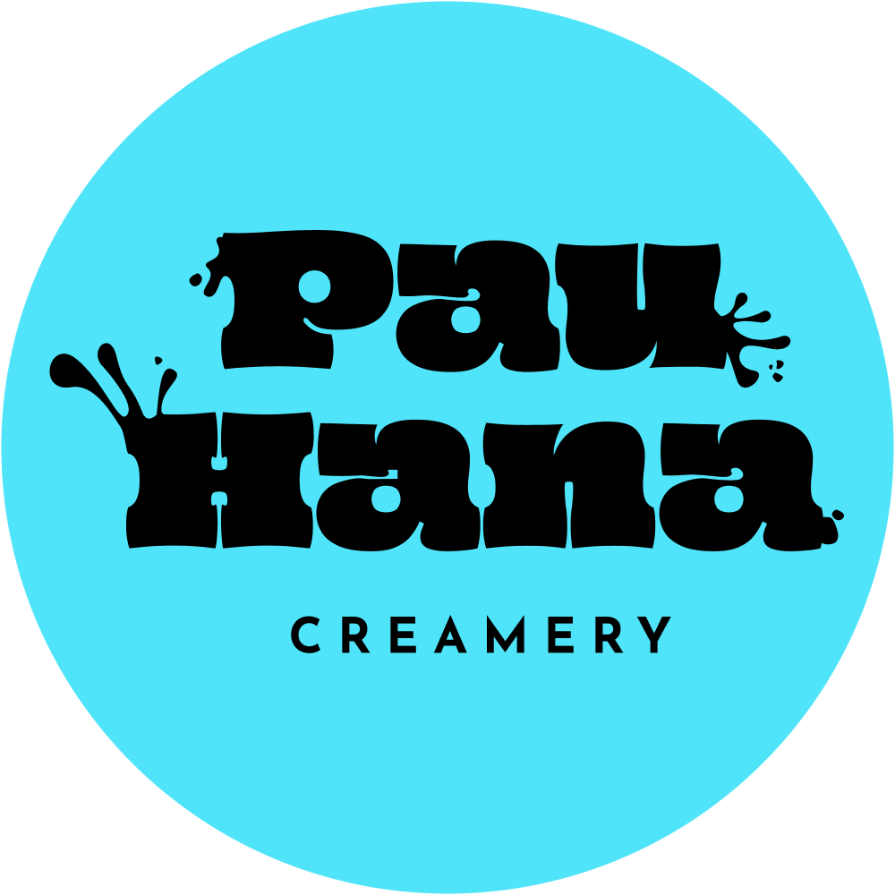
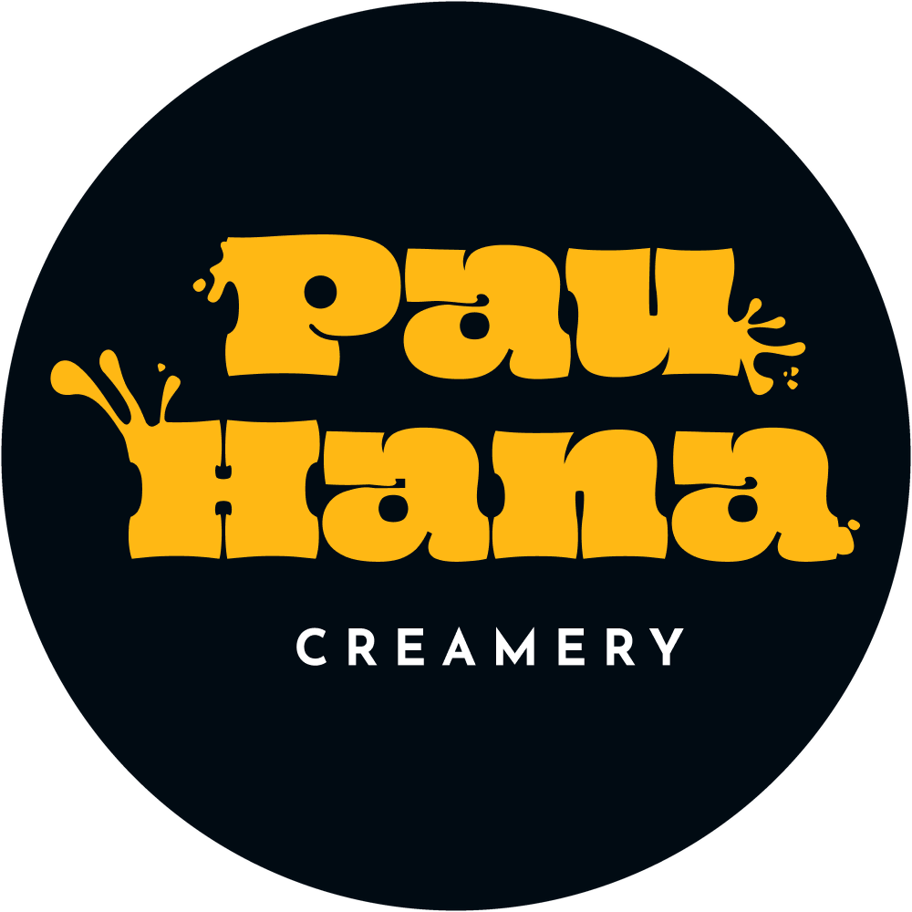

Everything else
Josefin Sans
Style guide, v1.4
Handcrafted island ice cream, spiked or classic.
Based on Oahu. "Pau hana" is the local phrase for the moment work is done and it is time to unwind. Backup line: Unwind by the scoop.
01
A chunky hand-lettered "Pau Hana" with ice cream splash accents, and "CREAMERY" in Josefin Sans, widely spaced capitals, underneath. The wordmark has open, rounded counters in the letter "a" so it holds up better at small sizes. Always use the supplied artwork. Never retype the wordmark.
At least 40px (space-10) on every side at web size. Leave more on the left, where the splash reaches out.
120px wide on screen and 1 inch wide in print, until a simplified small version exists. The thin splash claws and tiny droplets drop out below that.
Black logo on sea foam white, scoop yellow, coral blue and sunrise orange (5.9 to 1). White logo on ink and dark sea blue. Avoid the white logo on flat sunrise orange (3.3 to 1), scoop yellow and coral blue.
02
Five brand colors plus ink. Lead with scoop yellow and ink. Use sunrise orange, dark sea blue and coral blue as accents. Click a swatch to copy its hex code.
| Pair | Contrast | OK for |
|---|---|---|
| Ink on scoop yellow | 11.4 to 1 | All text |
| Ink on coral blue | 13.0 to 1 | All text |
| Ink on sunrise orange | 5.9 to 1 | All text |
| Ink on sea foam white | 19.1 to 1 | All text |
| Sea foam white on dark sea blue | 4.7 to 1 | All text |
| Dark sea blue on sea foam white | 4.7 to 1 | All text |
| Sea foam white on sunrise orange | 3.3 to 1 | Large text only (24px and up) |
| Scoop yellow on sea foam white | 1.7 to 1 | Never for text |
| Coral blue on sea foam white | 1.5 to 1 | Never for text |
| Sunrise orange on dark sea blue | 1.4 to 1 | Never adjacent for text |
| Pair | Contrast | OK for |
|---|---|---|
| Ink logo, CREAMERY and statements on scoop yellow (classic) | 11.4 to 1 | All text |
| White logo and CREAMERY on ink (spiked) | 19.1 to 1 | All text |
| Sea foam white statement and MADE: on ink (spiked) | 19.1 to 1 | All text |
| White 21+ on the sunrise orange pill | 3.4 to 1 | Large type only. The 21+ is about 11.6pt bold. |
| Sunrise orange pill against the ink field | 5.9 to 1 | Clear shape edge |
| Ink logo and CREAMERY on coral blue (classic icon) | 13.0 to 1 | All text |
| Scoop yellow logo and white CREAMERY on ink (spiked icon) | 11.4 to 1 and 19.1 to 1 | All text |
03
Two free Google Fonts under the SIL Open Font License. Josefin Sans does nearly everything. Oi is the headline font, for display headings only.
Everything else
Josefin Sans
Display only
Nutty Moose on the Loose
| Element | Weight | Size | Letter spacing | Color |
|---|---|---|---|---|
| CREAMERY (wordmark exception) | Bold | 10.6pt | 0.3em, separate from every other style | Ink on classic, white on spiked |
| Classic statement | Bold | 7pt | 0.1em | Ink |
| Spiked statement | Bold | 7pt | 0.1em | Sea foam white |
| MADE: | Regular | 7pt | 0.1em | Ink on classic, sea foam white on spiked |
| 21+ pill | Bold | 11.6pt | 0.1em | White on sunrise orange |
Tequila Orange Creamsicle
Big headlines at 36px or larger on the website, menus and signage, no more than two lines. Not on pint labels: flavor names there are handwritten.
Body text, labels, prices, ingredients, allergen notes and above all the alcohol and 21+ notices. Those stay in Josefin Sans.
Next to the modified wordmark, stock Oi reads as a slightly wrong copy. Always use the logo artwork.
On the web, self-host the font file and never let the browser fake a bolder one. Use it sparingly, or the wordmark stops being special.
04
space-28px. Gaps between blocks, tight label spacing.space-416px. Padding inside cards, label margins.space-624px. Space between a logo and its tagline.space-1040px. Minimum clear space around the logo, page margins.radius-sm4px. Small tags.radius-lg16px. Cards, color blocks, website sections.radius-pill999px. Buttons, stickers, the round pint label.05
Three buttons: primary for the one main action, secondary for a supporting action, and cancel for backing out. All three are pill shaped, bold capitals at 0.1em, and at least 48px tall so they are easy to tap.
Scoop yellow with ink text. One per screen or card. Hover flips it to ink with yellow text. Pressed turns it sunrise orange.
Ink outline, no fill. Hover fills it coral blue. Pressed fills it dark sea blue with sea foam white text.
Plain ink text with no outline, the quietest of the three. Hover and pressed add a light ink tint. It is never red; the brand has no red.
Faded to about 40 percent, no hover, not clickable, with a not-allowed cursor. Say why in nearby text, such as "Sold out", so color is never the only clue.
A 3px dark sea blue ring with a 2px gap on every button, for keyboard users. Never remove it.
These are built for sea foam white and scoop yellow pages. On an ink background, set the label to sea foam white and ask for an inverse version first.
| State | Pair | Contrast | OK for |
|---|---|---|---|
| Primary default | Ink on scoop yellow | 11.4 to 1 | All text |
| Primary hover | Scoop yellow on ink | 11.4 to 1 | All text |
| Primary pressed | Ink on sunrise orange | 5.9 to 1 | All text |
| Secondary default | Ink on sea foam white | 19.1 to 1 | All text |
| Secondary hover | Ink on coral blue | 13.0 to 1 | All text |
| Secondary pressed | Sea foam white on dark sea blue | 4.7 to 1 | All text |
| Cancel | Ink on sea foam white, with a light ink tint | 16 to 1 or better | All text |
| Disabled | Ink at 40 percent | Below 4.5 to 1 | Inactive controls are exempt; explain in text |
06
Each pint gets a 3.5 inch round label. A flat scoop yellow field marks a classic flavor and a flat ink field marks a spiked one, so a spiked pint stands out in the freezer case. The white box stays blank on purpose. Whoever makes the batch in the commercial kitchen handwrites the flavor name in it when the ice cream is made, so the label works for any flavor while recipes are still experimental. Pre-printed flavor names can come later, once the menu settles.


3.5 inch circle. The pint lid is 3.8 inches across with a 0.4 inch rim, so the label sits on the flat top with about 0.15 inch of margin all around. Do not go larger.
Waterproof matte film, full color, with a freezer-rated permanent adhesive. Apply to room-temperature lids, because labels stick poorly once the container is cold. Use permanent marker in the flavor box and the date box.
Logo, CREAMERY, blank white flavor box (the flavor name is handwritten here, never printed in Oi), alcohol statement, then a MADE: line. The classic label leaves the date to be written on the yellow. The spiked label adds a small white box under MADE: for it, and an orange 21+ pill on the corner of the flavor box.
Classic: ink logo, CREAMERY, statement and MADE: line on scoop yellow. Spiked: white logo and CREAMERY, sea foam white statement and MADE: line on ink. The 21+ is white on sunrise orange.
Every label carries its statement in plain words. Color is never the only signal. If a flavor falls outside 4 to 5 percent ABV, change the number.




07
A little mischievous, warm, local. Short sentences. Grown up humor, never crude.
Primary: "Handcrafted island ice cream, spiked or classic." Backup: "Unwind by the scoop." Use one per surface, not both.
Playfulness never blurs whether a product contains alcohol. Spiked products always say so in plain words and carry the 21+ marker.
Write "pau hana" without diacritics, as it is commonly written. Have any other Hawaiian words in flavor names checked by a native speaker before printing.